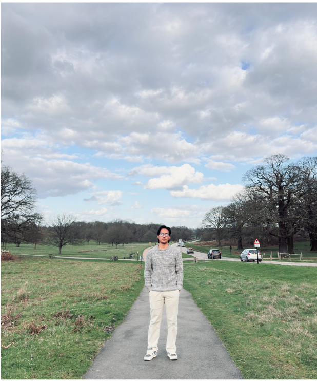

01
Time Management
I developed my ability to organise project activities within a fixed timeframe, establish priorities and coordinate connected tasks in a logical sequence.
Evidence: 12-Week Gantt ChartEmployability Skills Portfolio
Ravensbourne University London
Developing practical skills in project management, analytical problem-solving, communication, collaboration and professional development.

About Me
I am a BSc (Hons) Business Management student at Ravensbourne University London. My studies are helping me develop practical business and employability skills that can be applied to real organisational situations.
Through the Operations and Project Management module, I have strengthened my ability to analyse problems, plan structured projects, communicate recommendations and reflect on my professional development.
Project Experience
A practical business project focused on improving operational efficiency, customer experience and business performance.
The café faced long peak-hour queues, workspace congestion, inconsistent operating processes, stock-control problems and occasional product shortages.
I analysed the operational issues, considered their root causes and developed practical improvements involving workflow redesign, clearer responsibilities, standardised procedures, inventory controls and performance monitoring.
My Employability Skills
I developed my ability to organise project activities within a fixed timeframe, establish priorities and coordinate connected tasks in a logical sequence.
Evidence: 12-Week Gantt ChartI learned to look beyond visible symptoms, explore root causes, interpret information and develop feasible improvements that respond to business needs.
Evidence: Operational AnalysisPreparing a professional proposal and business presentation improved my ability to communicate ideas clearly while understanding teamwork, accountability and stakeholder communication.
Evidence: Project PresentationAcademic participation and developing my LinkedIn presence helped me recognise the importance of reliability, professional identity, networking and continuous career development.
Evidence: Attendance & LinkedInFeatured Evidence
The RainyDay Café 12-week Gantt chart is my main evidence of time-management development. It shows how the project was organised across initiation, diagnosis, design, procurement, training, implementation and review stages.
Preparing the schedule helped me consider timing, priorities, overlapping activities and the sequence required to deliver a structured project within the available period.
Evidence Gallery
Click any image to view it in a larger format.
Reflection
I have really found the Operations and Project Management module to have greatly improved my understanding of the concept of employability as I am able to use theory in business to solve a real problem in an organisation. The RainyDay Café Operational Improvement Project served as a great learning experience to consider problems, design solutions and give a presentation from a consultant's point of view.
The major skill that I learned was analytical problem-solving. Learning to explore the root cause of a problem rather than simply the obvious problem, and to interpret information and plan for feasible improvements to make the business more efficient and customer-friendly. Overall, this experience reinforced my capacity to make informed choices and tackle complex issues methodically.
I also enhanced my communication and collaboration skills by creating a professional project proposal and presenting ideas to a business audience. Project roles, responsibilities and structured planning activities helped me to appreciate the importance of team working, accountability and effective stakeholder communication.
In addition, my professional confidence and business awareness were enhanced by the project. Gained greater insight into the impact of operational decisions on customers, resource utilisation and organisation effectiveness. The maintenance of academic engagements and building my professional LinkedIn profile also reinforced the need for continuous education and career development.
I have improved but want to further build my presentation confidence, leadership skills and project management practical skills. All-in-all, this module has equipped me with skills that will help me in my future studies and career.
Future Development
Continue building confidence when presenting ideas and responding to questions.
Develop stronger leadership, delegation and responsibility-management abilities.
Build further experience using project-management methods and digital planning tools.
Continue developing my LinkedIn profile and professional connections.
Professional Profile
I am continuing to develop my professional identity, knowledge and employability skills.